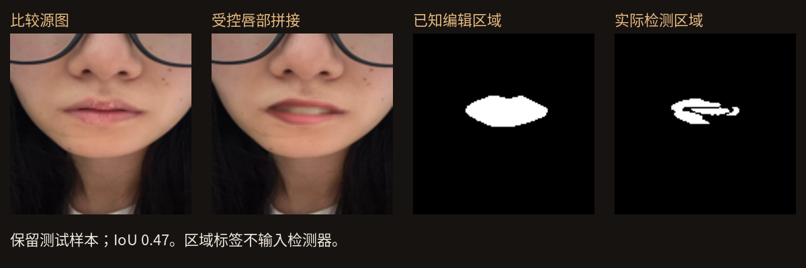

试色有谱 · TrueTone
信任守护师场景原型 · 按团队提供的赛题方向调整
同一支口红的网上展示可能因为光照、版本、原生唇色或局部编辑而不同。
我们的入口是核验信息：发现可解释的线索、对照来源，再决定哪些证据值得参考。
自拍颜色预览放在最后，作为辅助体验。
核心机制
① 图像处理线索：找可比源图、校正整体曝光、定位局部残差。
② 图文核对：对照画面可见的颜色与浓淡；无法验证的自述保留待核验。
③ 同产品证据：同色号、同产品线与版本；保留具体负面体验。
④ 个人相关性：质量与已确认标签匹配；未知条件不补猜。
⑤ 下一步建议：索取原图、确认版本、暂缓作为颜色依据。
来源隔离的受控实验
24 个原帖组，四个色号各 6 组；12 组调参、12 组保留测试。
每组包含 4 类正常处理对照与 5 类局部编辑；拼接供体不跨分组。
区域答案来自实际编辑 alpha；检测器不读取操作标签或区域答案。
6 张已知生成图来自一次 image_gen 生成，全部留作测试；仅一个生成家族。
对应基准图是核验输入。这不是缺少源图的盲测；对照来源也未经真实性认证。
公开成功，也公开失败
局部检测：40 / 60 新增编辑被检出；48 个正常处理对照未误报。
平均定位 IoU 0.399；漏检与无法匹配按 0 计入。
较轻局部改色：0 / 12。已知 AI 生成图触发模型：0 / 6。
因此生成模型保留实验入口，不能作为真实性通过门槛。

试色有谱 · 受控实验原型 · 2026-10-074 / 06正式演示顺序
先打开篡改风险测试台，比较对照、改色与拼接；解释橙色区域和无法核验。
再检查种草案例：绝对承诺不能靠相近颜色获得“真实认证”。
用兰蔻 274 展示同号不同产品线的边界；版本不明确时不混算。
最后看条件匹配的 TOP3 图与具体体验；预览从真实证据中取色，辅助理解。
品牌闭环与下一步
消费者：暂缓可疑颜色依据 → 索取源图 → 参考同产品、相近条件的真实体验。
品牌：回收需核验的素材 → 补拍同光照标准图 → 标清版本 → 调整详情页证据。
待验证指标：素材核验完成率、版本澄清率、证据点击与购买决策耗时。
下一步：多生成器、真实编辑过程、外部人工盲评与来源级独立测试。
边界：目前四个色号；未完成通用伪造、刷评或虚构文本识别，也未证明转化提升。